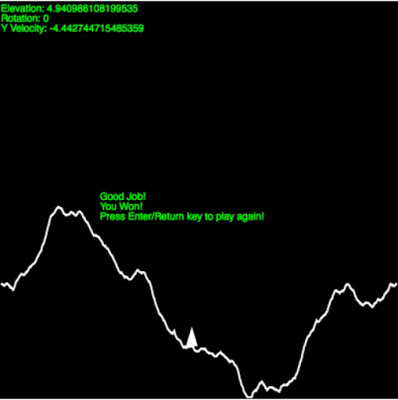

A Lunar Lander Game in Clojure
Introduction
In a prior post, I spent a great deal of time talking about Predator-Prey systems, ordinary differential equations, and solving these equations in Clojure. In this post, I describe a recent project I did that uses the same ODE solver to do something much more fun - implement a physics-based lunar lander game.
Here are the rules and operations for the game:
- To win, you must land the lander on the terrain with a rotation of 0 and an absolute vertical velocity less than 10 m/s.
- To engage the lander's thruster, press the 'f' key or space bar.
- To turn the lander, press the left and right arrow keys.
- If you go off the edge of the screen, land too fast, or land at an angle, you lose.
- Press enter to start/restart the game. The simplest solution is to just press the space bar when you get pretty close to the ground and carefully tap it so that you land very slowly. To give yourself a little challenge, turn the lander and give yourself some horizontal thrust. Then try to land it. I may later enhance the game with landing zones so you can't just land anywhere, but for now you can land anywhere you want.
Without further ado, here's the game:
If you are reading this blog via an aggregator that doesn't pick up the .js content, this is what the game looks like:

Implementation/Clojure Details
Now that you've had some fun trying the game out, here are a few high points. I won't go into a lot of detail in most of these sections since each could be a post in and of itself, but I will spend a good amount of time on multimethods, which were a big win in this application. If you want to build it, the entire project is available at https://github.com/markbastian/lander. Note that you will need to clone my numerics library for the Runge-Kutta solver and lein install it.
Platform Compatibility
Clojure 1.7 (Currently RC2) has the new cljc extension, which makes cross-compiling Clojure and ClojureScript a breeze. It is much easier and faster than the old cljx solution. I didn't make a JVM-based solution in parallel this time, but it would be pretty easy.
Game Physics
This was one of the easiest parts of the game since I just modeled the lander using differential equations and stepped forward using a Runge-Kutta integrator at each simulation step. The differential equations are:
\({dp\over dt} = v\)
\({dv\over dt} = -9.81 + thrust\)
Thrust is only applied when the user turns it on and the actual solution breaks the position (p) and velocity (v) vectors up into their x and y components.
And here's the code:
(defmethod sim :live [state-ref]
(let [{:keys [theta thrust time state]} @state-ref
t (.getTime (js/Date.))
dt (* (- t time) 1E-3)
dvx #(-> theta (* Math/PI) (/ -180) Math/sin (* thrust))
dvy #(+ -9.81 (-> theta (* Math/PI) (/ -180) Math/cos (* thrust)))
new-states (rk/rk-step [#(% 3) #(% 4) dvx dvy] state dt tableaus/classic-fourth-order)]
(swap! state-ref into { :state new-states :time t })))
Terrain
Terrain is generated using the midpoint displacement method (source). Read about it here. Every new game procedurally generates a new terrain profile. There's a good chance I'll do a full on 3D terrain generation algorithm for a future blog post.
State
State is held in a single atom. As usual, when writing Clojure apps, I just modeled my problem as a data structure held by a Clojure concurrency primitive and everything else fell into place. The values tracked were game state (discussed later in the multimethods section), physical simulation state, time, theta (the lander's rotation), thrust (toggled on and off by user input), and terrain. All of this was easily managed in a single atom. One of the most beautiful things about Clojure is the simplicity of modeling your domain. When you stop thinking in objects and start thinking in terms of data and functions on data, life becomes much simpler.
Project Size
The project is ~200 LOC. Not too shabby for a complete game. There are certainly areas where I could have further reduced the amount of code, such as in the rendering section, but there comes a point where everything works fine and there's no need to mess with it further. Although I don't believe in brevity for brevity's sake, I do believe less code is easier to maintain and navigate than more code, so I always appreciate a concise solution.
Multimethods - The Big Win
In a computer game, you will have different stages of play, or game states (not to be confused with the physics state being maintained in the sim loop). For example, when you start a game there is a setup stage. Once everyone has joined there is a main game phase in which most play occurs. Finally, when someone wins there is usually some sort of congratulatory display or an option to play again. Each stage or game state entails a different set of rules regarding what input is received, what is rendered, and so on. However, each state has common functions such as receiving input and rendering. This is where Clojure multimethods come into play - they allow you to call the same overall game logic, but dispatch different functions based on some custom function.
In this game, the game is in one of four states:
- :before - The state of being before any game has been played.
- :live - A game is currently being played.
- :win - A game has been played and you won.
- :lose - A game has been played and you lost.
Depending on the state of the lander game, different logic is executed for the input, rendering, and simulation functions. For example, in :before, :win, and :lose state the game only allows you to start/restart a game, where in :live state the game accepts input to control the lander. In :live state the game renders the lander, terrain, and stats. In :before state the game only renders its directions.
The cool thing about all of this is that in Clojure I only have one main game loop (shown below). It repeatedly calls game-state, state, and render. At the same time, input is taken via the handle-keydown and handle-keyup methods. What happens when these methods are invoked depends on the current game state, with the right logic being dispatched via multimethods.
(defn ^:export init[canvas]
(set!
(.-onload js/window)
(let [state (atom { :game-state :before })]
(do
(js/setInterval #(do
(gs/game-state state)
(sim/sim state)
(render/render state canvas)) 1)
(set! (.-onkeydown js/document) (fn [e] (in/handle-keydown state e)))
(set! (.-onkeyup js/document) (fn [e] (in/handle-keyup state e)))))))
Here is how it is done. I have 5 methods that I am invoking polymorphically based on the current game state (Note that they are shown together here, but are in separate files in the project):
;Watch the actual game state and transition to a new state based on the current physical state.
(defmulti game-state (fn [state] (@state :game-state)))
;Simulate the physics of the game based on the game state.
(defmulti sim (fn [state] (@state :game-state)))
;Draw to the screen based on the game state.
(defmulti render (fn [state _] (@state :game-state)))
;Handle input based on the game state.
(defmulti handle-keydown (fn [state _] (@state :game-state)))
(defmulti handle-keyup (fn [state _] (@state :game-state)))
The actual function dispatched when a defmulti is called depends on the dispatch function. In this case the dispatch function is (fn [state] (@state :game-state)). Now that I've defined the multimethods and their dispatch functions, I need to create methods that dispatch based on the right game state. Here's how it works for the render multimethod:
(defmulti render (fn [state _] (@state :game-state)))
(defmethod render :before [_ canvas] (intro-screen canvas))
(defmethod render :win [state canvas]
(do
(draw canvas @state)
(win-screen canvas)))
(defmethod render :lose [state canvas]
(do
(draw canvas @state)
(lose-screen canvas)))
(defmethod render :live [state canvas] (draw canvas @state))
So, given the state of the game, different render methods are called based on the state of the game. The same is true for all of the other multimethods defined above. For example, the :live method for the sim multi method was shown earlier. When the game is not in a live state, it simply calls the method show below, which conveniently makes the lander stop wherever it was when the game ended.
(defmethod sim :default [state-ref] ())
I won't go through all of the methods I defined, but you should get the idea from what I've posted. Multimethods provide a very effective and powerful way to dynamically dispatch different behaviors based on a custom defined function.
Finally, I could have defined my multimethods in one common namespace and provided implementations in another. Had I chose to provide both HTML Canvas and Swing/Graphics2D versions of this application, I could have implemented a single game loop that performs all logic in terms of multimethods and defined implementations in separate namespaces. Depending on which version of the application I wanted to run I would require the corresponding namespaces.
Conclusion
In this post, I presented a lunar lander game written in Clojure along with some observations about the code. As with my other Clojure projects, I am impressed by how I can make a non-trivial application with such a small amount of code. Various aspects of Clojure contributed to this, but the thing that most impressed me with this particular application was the use of multimethods to easily transition between game states and manage which functions should be dispatched under what conditions.